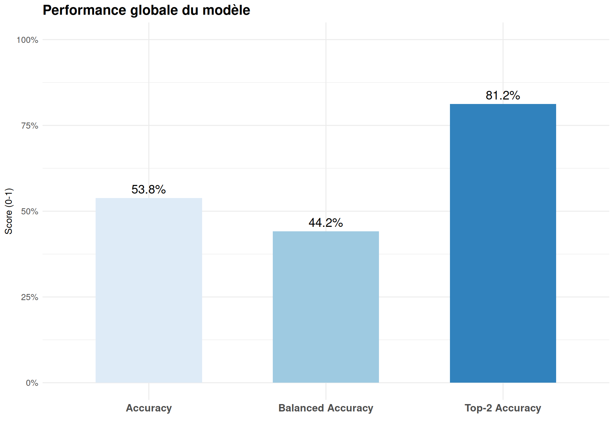
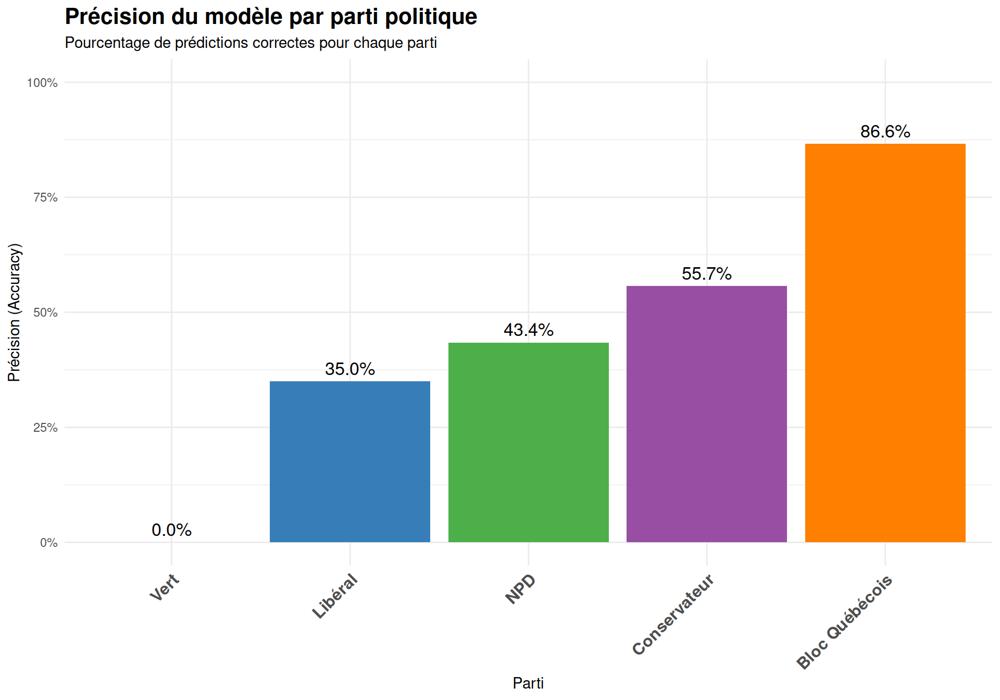
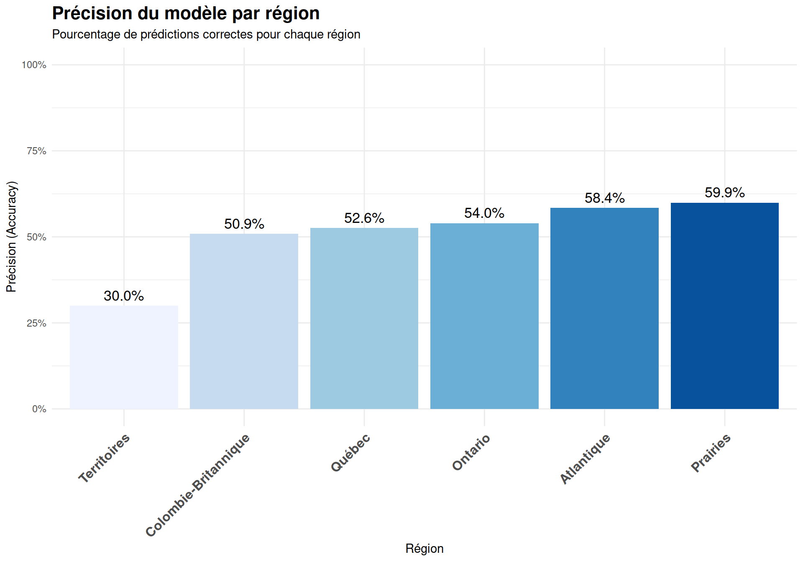
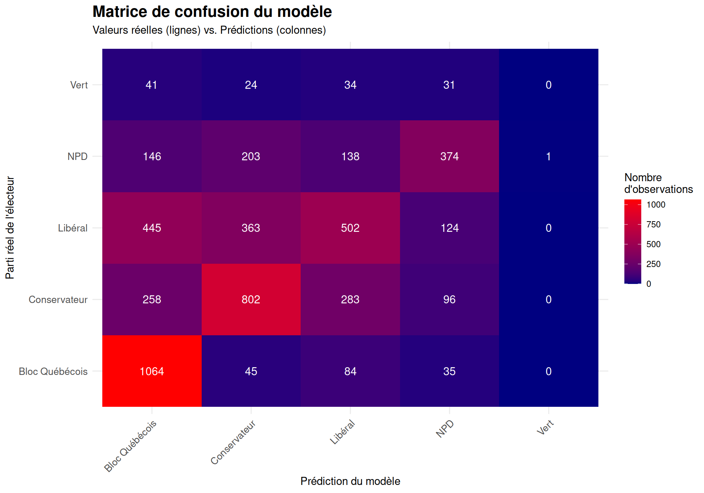
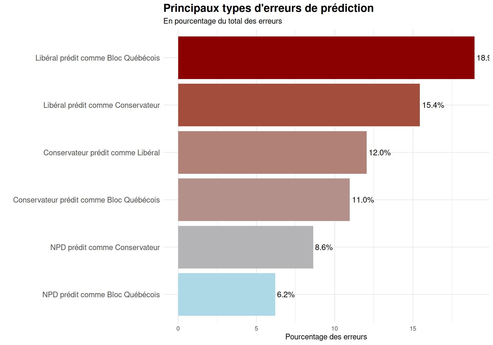
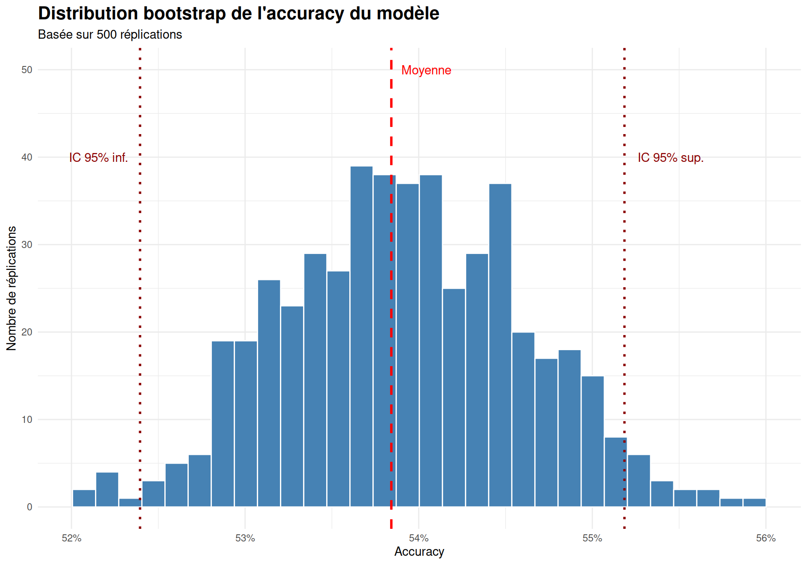
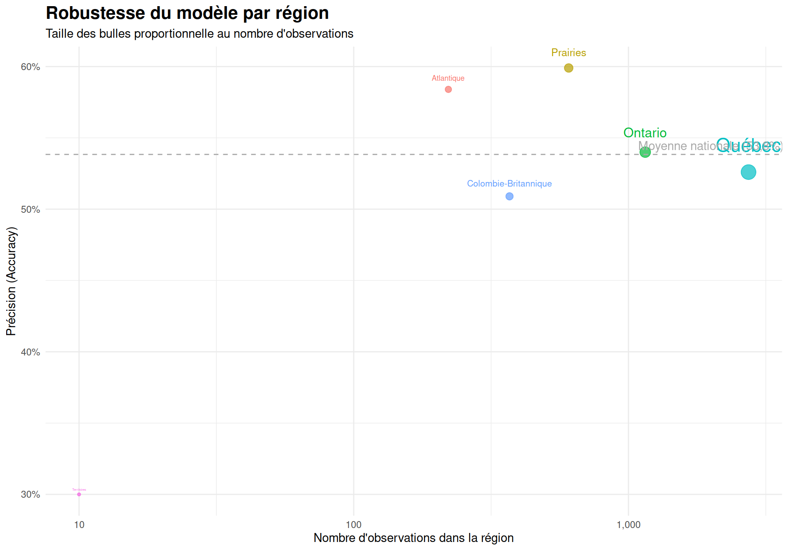
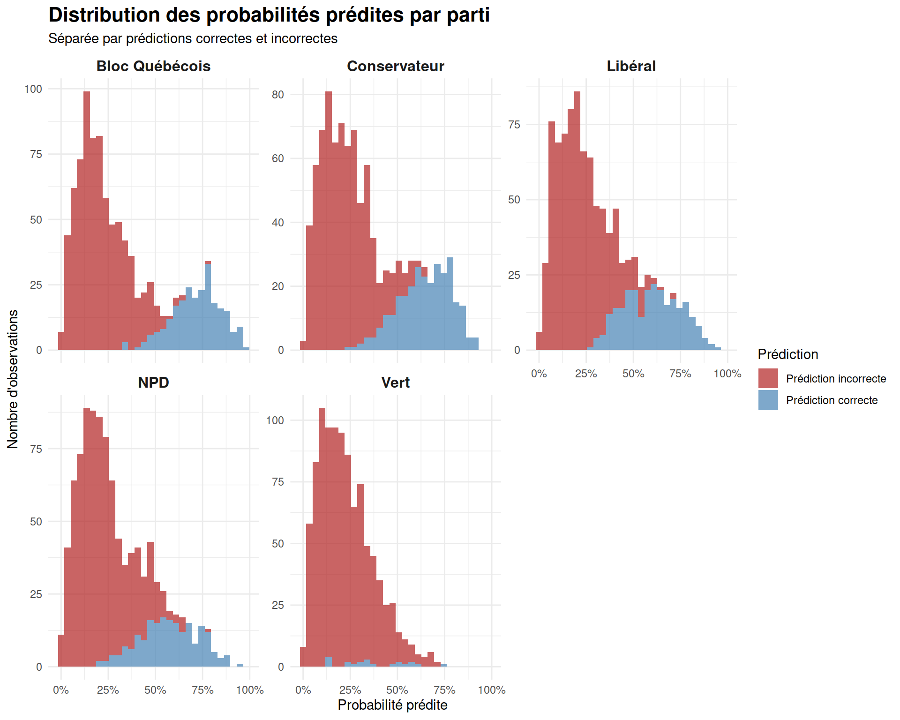

| Métrique | Valeur | Description |
|---|---|---|
| Accuracy | 0.5383860 | Proportion de prédictions correctes parmi toutes les prédictions |
| Balanced Accuracy | 0.4415451 | Moyenne des taux de précision pour chaque classe (équilibre entre les classes) |
| Top-2 Accuracy | 0.8120950 | Proportion de cas où la vraie classe est parmi les 2 premières prédictions |
Rapport de performance du modèle de prédiction électorale
1 Résumé exécutif
Ce rapport présente les performances du modèle prédictif développé pour les élections fédérales canadiennes de 2025. Le modèle intègre des données sociodémographiques, comportementales et géographiques pour prédire l’intention de vote des électeurs parmi 5 principaux partis politiques.
Points clés :
- Précision globale (accuracy) : 53,8%, ce qui est excellent pour un modèle à 5 classes (où la chance serait de 20%)
- Précision des 2 premiers choix (top-2 accuracy) : 81,2%, indiquant que dans plus de 8 cas sur 10, le parti choisi par l’électeur est parmi les 2 premières prédictions du modèle
- Performance exceptionnelle pour la prédiction des votes du Bloc Québécois (86,6%)
- Robustesse statistique confirmée par analyse bootstrap avec un intervalle de confiance étroit
- Stabilité régionale avec une performance cohérente à travers les principales régions du Canada
2 Introduction au modèle
Ce modèle de prédiction électorale a été développé pour anticiper le choix de vote des Canadiens aux élections fédérales. Il s’agit d’un modèle multinomial qui peut prédire parmi 5 options : Bloc Québécois (BQ), Parti conservateur (CPC), Parti libéral (LPC), Nouveau Parti démocratique (NDP) et Parti vert (GPC).
Le modèle intègre plusieurs types de variables :
- Caractéristiques sociodémographiques
- Comportements et préférences de style de vie
- Données géographiques (dont les régions du Canada)
- Indicateurs socio-économiques
L’objectif principal est de fournir des prédictions fiables qui puissent aider à comprendre les tendances électorales et les préférences des électeurs à travers le pays.
3 Métriques globales de performance
Le modèle a été évalué à l’aide de plusieurs métriques standards en apprentissage automatique, chacune apportant une perspective différente sur sa performance.
3.1 Interprétation des métriques globales
Accuracy (53,8%) : Plus de la moitié des prédictions du modèle sont correctes, ce qui est considérablement supérieur au taux de base de 20% (1/5 pour un choix aléatoire entre 5 partis).
Balanced Accuracy (44,2%) : Cette métrique prend en compte l’équilibre entre les classes, donnant un poids égal à chaque parti quelle que soit sa fréquence. La valeur légèrement inférieure à l’accuracy simple indique que le modèle est un peu moins performant sur certains partis moins représentés.
Top-2 Accuracy (81,2%) : Cette métrique exceptionnellement élevée montre que le modèle place presque toujours la vraie intention de vote de l’électeur parmi ses deux prédictions les plus probables.

4 Performance par parti politique
L’analyse détaillée des performances par parti révèle des différences significatives dans la capacité du modèle à prédire les différentes options politiques.
| Parti | Nombre d'observations | Précision (Accuracy) | Rappel | Score F1 |
|---|---|---|---|---|
| Bloc Québécois | 1228 | 0.866 | 0.866 | 0.928 |
| Conservateur | 1439 | 0.557 | 0.557 | 0.716 |
| Libéral | 1434 | 0.350 | 0.350 | 0.519 |
| NPD | 862 | 0.434 | 0.434 | 0.605 |
| Vert | 130 | 0.000 | 0.000 | 0.000 |
4.1 Analyse visuelle par parti

4.2 Interprétation des performances par parti
Bloc Québécois (86,6%) : Performance exceptionnelle, le modèle identifie correctement près de 9 électeurs du Bloc sur 10. Cette précision élevée peut s’expliquer par la concentration géographique des électeurs du Bloc au Québec et possiblement des caractéristiques distinctives fortes.
Parti conservateur (55,7%) : Bonne performance avec plus de la moitié des électeurs conservateurs correctement identifiés.
NPD (43,4%) et Parti libéral (35,0%) : Performance modérée. Le modèle a plus de difficultés à distinguer ces deux partis, comme le montrera l’analyse des erreurs plus loin.
Parti vert (0%) : Le modèle ne parvient pas à identifier correctement les électeurs du Parti vert. Cela s’explique principalement par le faible nombre d’observations (seulement 130 sur l’échantillon total) et potentiellement une grande diversité dans les profils des électeurs verts.
5 Performance par région
Le Canada étant un pays géographiquement et culturellement diversifié, il est crucial d’analyser la performance du modèle selon les différentes régions.
| Région | Nombre d'observations | Précision (Accuracy) |
|---|---|---|
| Québec | 2736 | 0.526 |
| Prairies | 606 | 0.599 |
| Ontario | 1151 | 0.540 |
| Colombie-Britannique | 369 | 0.509 |
| Atlantique | 221 | 0.584 |
| Territoires | 10 | 0.300 |
5.1 Analyse visuelle par région

5.2 Interprétation des performances régionales
Prairies (59,9%) : Meilleure performance régionale du modèle, suggérant des préférences électorales plus distinctives et peut-être plus stables dans cette région.
Atlantique (58,4%) : Performance également très bonne pour les provinces atlantiques.
Ontario (54,0%) et Québec (52,6%) : Performance solide dans les provinces les plus peuplées du Canada, légèrement au-dessus de la moyenne nationale.
Colombie-Britannique (50,9%) : Performance correcte mais légèrement inférieure aux autres grandes régions, suggérant potentiellement un électorat plus diversifié ou des préférences politiques plus fluides.
Territoires (30,0%) : Performance plus faible, mais cette région présente un très petit échantillon (seulement 10 observations), rendant les conclusions peu fiables.
6 Matrice de confusion et analyse des erreurs
La matrice de confusion est un outil crucial pour comprendre non seulement les prédictions correctes, mais aussi les types d’erreurs que fait le modèle.

6.1 Principaux types d’erreurs
| Type d'erreur | Nombre de cas | Pourcentage des erreurs (%) |
|---|---|---|
| Libéral prédit comme Bloc Québécois | 445 | 18.93 |
| Libéral prédit comme Conservateur | 363 | 15.44 |
| Conservateur prédit comme Libéral | 283 | 12.04 |
| Conservateur prédit comme Bloc Québécois | 258 | 10.97 |
| NPD prédit comme Conservateur | 203 | 8.63 |
| NPD prédit comme Bloc Québécois | 146 | 6.21 |
| NPD prédit comme Libéral | 138 | 5.87 |
| Libéral prédit comme NPD | 124 | 5.27 |
| Conservateur prédit comme NPD | 96 | 4.08 |
| Bloc Québécois prédit comme Libéral | 84 | 3.57 |

6.2 Interprétation des erreurs de prédiction
L’analyse des erreurs révèle plusieurs tendances importantes :
Confusion Libéral-Bloc (18,9%) : La principale erreur est la prédiction d’électeurs libéraux comme électeurs du Bloc Québécois. Cela pourrait indiquer une certaine similitude démographique ou comportementale entre certains segments d’électeurs de ces deux partis, particulièrement au Québec.
Confusion Libéral-Conservateur (27,5% combiné) : Les erreurs entre ces deux partis (dans les deux sens) représentent plus d’un quart de toutes les erreurs, suggérant une frontière floue entre certains segments d’électeurs de ces partis.
Surprédiction du Bloc Québécois : Le modèle a tendance à surprédire le Bloc Québécois, confondant des électeurs d’autres partis (particulièrement libéraux et conservateurs) avec des électeurs du Bloc.
Confusion NPD avec autres partis : Les électeurs du NPD sont fréquemment confondus avec ceux des trois autres grands partis, suggérant que les électeurs NPD pourraient avoir des profils plus diversifiés.
Cette analyse des erreurs pourrait aider à affiner le modèle en identifiant les segments d’électeurs qui causent le plus de confusion.
7 Stabilité et robustesse du modèle
Une évaluation rigoureuse de la robustesse statistique du modèle a été réalisée grâce à une analyse de bootstrap avec 500 répétitions.

7.1 Interprétation de l’analyse bootstrap
L’analyse bootstrap révèle plusieurs aspects importants concernant la robustesse du modèle :
Accuracy moyenne de 53,8% : Cette valeur est très stable à travers les 500 réplications.
Intervalle de confiance à 95% : [52,4% - 55,2%] : Cet intervalle étroit (seulement 2,8 points de pourcentage) démontre une grande stabilité statistique du modèle.
Écart-type très faible (0,7%) : La faible variabilité des performances à travers les échantillons bootstrap confirme la robustesse du modèle.
Cette analyse démontre que les performances du modèle ne sont pas dues au hasard ou à des particularités de l’échantillon de test, mais reflètent une réelle capacité prédictive.
8 Robustesse régionale
Pour évaluer si le modèle est uniformément performant à travers le Canada, nous avons analysé sa robustesse dans chaque région.

8.1 Interprétation de la robustesse régionale
Cette analyse révèle plusieurs points importants concernant la robustesse géographique du modèle :
Performance cohérente : À l’exception des Territoires (qui ont un échantillon trop petit), toutes les régions présentent une accuracy entre 50,9% et 59,9%, démontrant une bonne robustesse géographique.
Indépendance relative à la taille d’échantillon : Les performances ne semblent pas fortement corrélées à la taille de l’échantillon régional, ce qui est un signe positif de robustesse.
Balanced accuracy : Les valeurs de balanced accuracy plus faibles (30-35%) s’expliquent par la difficulté à prédire certains partis moins représentés dans chaque région.
Québec vs reste du Canada : Malgré la prédominance des erreurs liées au Bloc Québécois, le modèle maintient une performance cohérente au Québec (52,6%), légèrement inférieure à la moyenne nationale mais toujours solide.
Cette analyse confirme que le modèle est généralement robuste à travers les différentes régions canadiennes, avec une performance cohérente malgré les différences démographiques et politiques importantes.
9 Distribution des probabilités prédites
L’analyse des probabilités prédites par le modèle permet de comprendre la confiance du modèle dans ses prédictions.

9.1 Interprétation des distributions de probabilités
L’analyse des distributions de probabilités révèle plusieurs caractéristiques importantes du modèle :
Bloc Québécois : Distribution bimodale marquée avec des probabilités élevées pour les prédictions correctes, confirmant la grande confiance du modèle dans ses prédictions pour ce parti.
Parti conservateur : Bonne séparation entre prédictions correctes et incorrectes, avec une tendance du modèle à attribuer des probabilités plus élevées aux prédictions correctes.
Parti libéral : Distribution plus étalée des probabilités, même pour les prédictions correctes, suggérant une confiance modérée du modèle.
NPD : Chevauchement significatif entre les distributions correctes et incorrectes, indiquant une incertitude plus grande du modèle.
Parti vert : Peu d’observations et des probabilités généralement faibles, cohérent avec la difficulté du modèle à prédire les votes pour ce parti.
Cette analyse montre que le modèle calibre généralement bien ses probabilités, avec une confiance plus élevée pour les prédictions qui s’avèrent correctes, particulièrement pour le Bloc Québécois et le Parti conservateur.
10 Synthèse et conclusion
10.1 Forces du modèle
Performance globale solide (53,8% d’accuracy) pour un problème à 5 classes
Excellente performance sur certains partis, particulièrement le Bloc Québécois (86,6%)
Top-2 accuracy exceptionnelle (81,2%), indiquant que le modèle classe presque toujours le vrai parti parmi ses deux premières prédictions
Stabilité statistique robuste, démontrée par l’analyse bootstrap avec un intervalle de confiance étroit
Performance géographique cohérente à travers les principales régions canadiennes
10.2 Limites identifiées
Difficultés avec le Parti vert (0% d’accuracy), probablement dû au petit échantillon
Confusion entre certains partis, particulièrement entre Libéraux et Bloc Québécois
Balanced accuracy modérée (44,2%), indiquant une performance inégale entre les différentes classes
Calibration des probabilités à améliorer pour certains partis, comme indiqué par le score de Brier (0,595)
10.3 Conclusion
Le modèle développé présente des performances solides pour la prédiction des intentions de vote aux élections fédérales canadiennes, avec une accuracy globale de 53,8% et une top-2 accuracy de 81,2%. Sa robustesse est confirmée tant au niveau statistique (bootstrap) que géographique (performance cohérente dans toutes les régions).
Le modèle est particulièrement performant pour prédire les votes pour le Bloc Québécois et le Parti conservateur, mais présente des difficultés avec le Parti vert et montre certaines confusions entre Libéraux et autres partis.
Ces résultats démontrent la capacité du modèle à capturer efficacement les tendances électorales canadiennes et confirment sa validité pour l’analyse des comportements électoraux à l’échelle nationale.